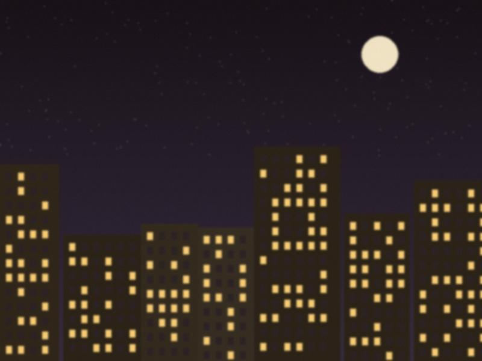

Easter at the door
The Resurrection, with the people outside and the Gospel on the steps.
Dn. Denha · 04 Apr 2021 · Issue 62 min read

The courtyard gate with candles, seen from the steps.This year the church was open only for the choir and the clergy, so the Gospel of the Resurrection was read from the steps, facing the courtyard, with the doors open behind me. I have never read so loudly. I saw the people at the gate with candles, masks over their noses and the light on their eyes. A girl of five, standing with her family at the gate in the lane, kept her candle high all through the reading and did not drop it. I gave her a candle afterwards.
Christ is risen. I said it to the whole lane and the lane said it back.